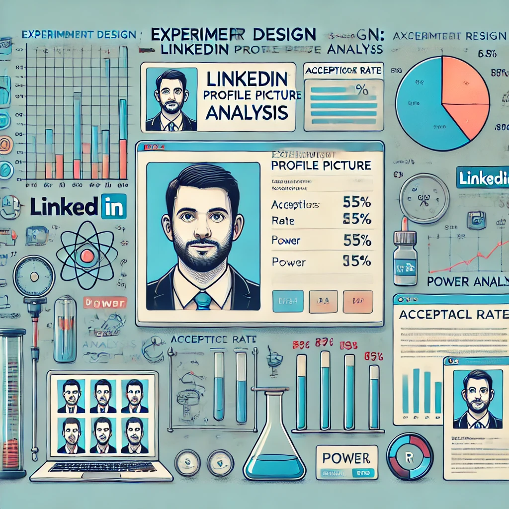

Analyzing 1.26 million records of NOAA data on U.S. extreme weather events since 2000, focusing on trends, property damage, and fatalities. Utilized advanced data cleaning, geospatial analysis, and inflation-adjusted economic assessment techniques to reveal increasing frequency and impact of severe weather.
Comprehensive SQL analysis on COVID-19 data, involving over a million records to evaluate trends, mortality rates, and vaccination impacts across regions. Utilized advanced SQL techniques for data extraction, transformation, trend analysis, and performance optimization to derive actionable insights.
Analyzing graphs using network analysis algorithms in Python and integrating Neo4j, MongoDB, and Redis into company's infrastructure to optimize delivery operations and expand pick-up locations. Demonstrated advanced skills in graph database analysis, document-based traffic management, and real-time key-value data handling for efficient logistics.
Cleaning and standarding a 3,000-record Nashville housing dataset using SQL, addressing missing values, duplicates, and data inconsistencies. Utilized advanced SQL techniques for data imputation, normalization, and feature engineering to prepare the data for robust analysis.
Excel Dashboard analyze demographic data to understand the factors influencing bike purchases. The dataset contains detailed information about individuals, including their income, marital status, education, and whether they have purchased a bike.

Effective interactive tableau dashboards.
Interactive Power BI dashboard to visualize and analyze survey data from 1,000 data professionals, providing insights into demographics, career satisfaction, and industry trends. Utilized advanced DAX calculations and dynamic visualizations to enable detailed exploration and actionable insights.
Developed advanced NLP models using BERT and concatenated Word2Vec embeddings to detect sarcasm in social media posts, optimizing with Optuna for enhanced performance. Demonstrated proficiency in contextual language understanding, semantic analysis, and hyperparameter tuning for accurate sarcasm classification.
Predicted stroke risk with 92% accuracy by applying logistic regression, random forests, and deep learning on health data. Leveraged skills in data preprocessing, balancing with SMOTE, and hyperparameter optimization using KNN and Optuna for model tuning.

Experimental study explores how visual elements, specifically profile pictures, influence the acceptance rate of connection requests. Through real life experiment and power analysis in R programming used to develop and analyze the result.
Research design developed for the project "BEWELL: Can AI and self-tracking improve your health and lifestyle?" outlines methods, and techniques used to create a robust research design that answers an important data science question.